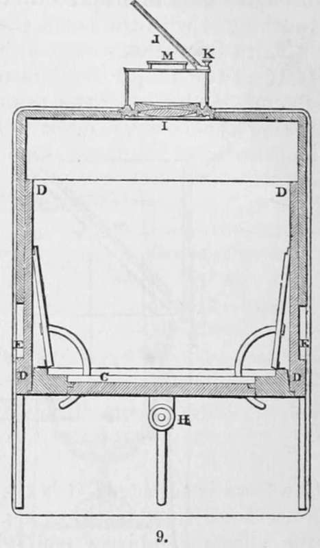

The Original Process Of Daguerre. Part 2
Description
This section is from the book "A Manual Of Photography", by Robert Hunt. Also available from Amazon: A Manual of Photography.
The Original Process Of Daguerre. Part 2
Second Operation
It is necessary for this operation, which is really the most important of all, that a box, similar to figs. 4 and 5, be provided. Figure 4 represents a section, supposed to pass down the middle of the apparatus by the line a b in fig. 5, which represents the box as seen from above, c is a small lid which accurately fits the interior, and divides the boxes into two chambers. It is kept constantly in its place when the box is not in use ; the purpose of it being to concentrate the vapour of the iodine, that it may act more readily upon the plate when it is exposed to it. d is the little capsule in which the iodine is placed, which is covered with the ring, J, upon which is stretched a piece of fine gauze, by which the particles of iodine are prevented from rising and staining the plate, while the vapour, of course, passes freely through it. e is the board with the plate attached, which rests on the four smaller projecting pieces, f, fig. 5. g is the lid of the box, which is kept closed, except when the plate is removed or inserted. h represents the supports for the cover c. k, tapering sides all round, forming a funnel-shaped box within.
To prepare the plate :—The cover c, being taken out, the cup, d, is charged with a sufficient quantity of iodine, broken into small pieces, and covered with the gauze, j. The board, e, is now, with the plate attached, placed face downwards, in its pro-}>er position, and the box carefully closed.
In this position the plate remains until the vapour of the iodine has produced a definite golden yellow colour, nothing more nor less.* If the operation is prolonged beyond the point at which this effect is produced, a violet colour is assumed, which, is much less sensitive to light; and if the yellow coating is too pale, the picture produced will prove very faint in all its parts. The time for this cannot be fixed, as it depends entirely on the temperature of the surrounding air. No artificial heat must be applied, unless in the case of elevating the temperature of an apartment in which the operation. may be going on. It is also important that the temperature of the inside of the box should be the same as it is without, as otherwise a deposition of moisture is liable to take place over the surface of the plate. It is well to leave a portion of iodine always in the box ; for, as it is slowly vaporized, it is absorbed by the wood, and when required it is given out over the more extended surface more equally, and with greater rapidity.
* If a piece of iodine is placed on a silver tablet, it will speedily be surrounded with coloured rings: these being the colours of thin films, as described.
As, according to the season of the year, the time for producing the required effect may vary from five minutes to half an hour, or more, it is necessary, from time to time, to inspect the plate. This is also necessary, to see if the iodine is acting equally on every part of the silver, as it sometimes happens that the colour is sooner produced on one side than on the other, and the plate, when such is the case, must be turned one quarter round. The plate must be inspected in a darkened room, to which a faint light is admitted in some indirect way, as by a door a little open. The board being lifted from the box with both hands, the operator turning the plate towards him rapidly, observes the colour. If too pale, it must be returned to the box ; but if it has assumed the violet colour it is useless, and the whole process must be again gone through.
From description, this operation may appear very difficult; but with a little practice the precise interval necessary to produce the best effect is pretty easily guessed at. When the by Sir Isaac Newton. Close examination will show the formation of two yellow rings, one within and the other without the series. If we cover one-half of the circle with a card, and expose the other part to light, the rings will be found to change colour, the outer and the inner yellow darkening the most readily, and to an equal shade; thus proving the advantage of obtaining this yellow tone proper yellow colour is produced, the plate must be put into a frame, which fits the camera obscura, and the doors are instantly closed upon it, to prevent the access of light. The figures represent this frame, fig. 6, with the doors, b b, closed on the plate ; and fig. 7, with the doors opened by the half circles, a a. d d are stops by which the doors are fastened until the moment when the plate is required for use. The third operation should, if possible, immediately succeed the second: the longest interval between them should not exceed an hour, as the iodine and silver lose their requisite photogenic properties.* It is necessary to observe, that the iodine ought never to be touched with the fingers, as we are very liable to injure the plate by touching it with the hands thus stained.
Third Operation
The third operation is the fixing of the plate at the proper focal distance from the lens of the camera obscura, and placing the camera itself in the right position for taking the view we desire. Fig. 8 is a perpendicular section, lengthwise, of Daguerre's camera. a is a ground glass by which the focus is adjusted; it is then removed, and the photographic plate substituted, as in c, fig. 9. b is a mirror for observing the effects of objects, and selecting the best points of view. It is inclined at an angle of 45°, by means of the support, l. To adjust the focus, the mirror is lowered, and the piece of ground glass, a, used. The focus is easily adjusted by sliding the box, d, out or in, as represented in the plate. When the focus is adjusted, it is retained in its place by means of the screw, h. The object glass, j, is achromatic and periseopic; its diameter is about one inch, and its focal distance rather more than fourteen inches, m, is a stop a short distance from the lens, the object of which is to cut off all those rays of light which do not come directly from the object to which the camera is directed. This instrument reverses the objects; that which is to the right in nature being to the left in the photograph. This can be remedied by using a mirror outside, as k j, in figure 9. This arrangement, however, reduces the quantity of light, and increases the time of the operation one-third. It will, of course, be adopted only when there is time to spare. After having placed the camera in front of the landscape, or any object of which we desire the representation, our first attention must be to adjust the plate at such a distance from the lens, that a neat and sharply defined picture is produced. This is, of course, done by the obscured glass. The adjustment being satisfactorily made, the glass is removed, and its place supplied by the frame containing the prepared plate, and the whole secured by the screws. The doors are now opened by means of the half circles, and the plate exposed to receive the picture. The length of time necessary for the production of the best effect, varying with the quantity of light, is a matter which requires the exercise of considerable judgment, particularly as no impression is visible upon the tablet when it is withdrawn from the camera. At Paris this varies from three to thirty minutes. The most favourable time is from seven to three o'clock. A drawing which, in the months of June and July, may be taken in three or four minutes, will require five or six in May or August, seven or eight in April and September, and so on, according to the season. Objects in shadow, even during the brightest weather, will require twenty minutes to be correctly delineated. From what has been stated, it will be evident that it is impossible to fix, with any precision, the exact length of time necessary to obtain photographic designs; but by practice we soon learn to calculate the required time with considerable correctness. The latitude is, of course, a fixed element in this calculation. In the sunny climes of Italy and southern France, these designs may be obtained much more promptly than in the uncertain clime of Great Britain. It is very important that the time necessary is not exceeded,—prolonged solarization has the effect of blackening the plate, and this destroys the clearness of the design. If the operator has failed in his first experiment, let him immediately commence with another plate; correcting the second trial by the first, he will seldom fail to produce a good photograph.

* This is contrary to the experience of the author of this volume; and Dr. Draper, of New York, states that he has found the plates improve by keeping a few hours before they are used; and M. Claudet states, that even after a day or two the sensibility of the plates is not impaired.

Continue to:
- prev: Chapter IV. Daguerreotype. The Discovery Of M. Daguerre. Section I. The Original Process Of Daguerre
- Table of Contents
- next: The Original Process Of Daguerre. Part 3